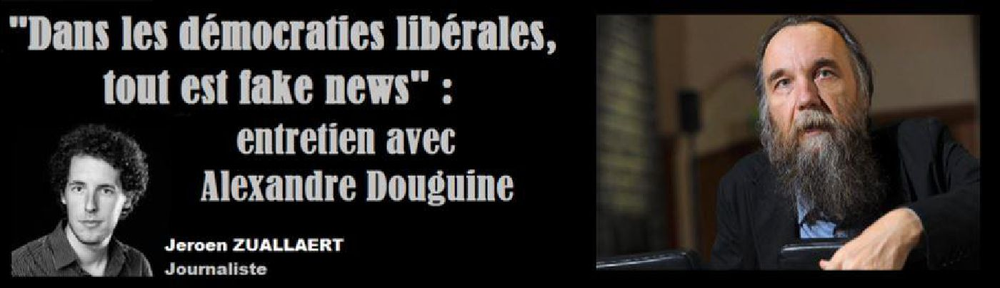
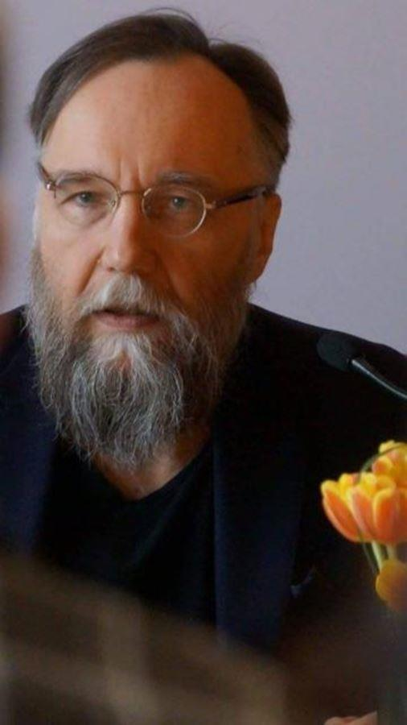
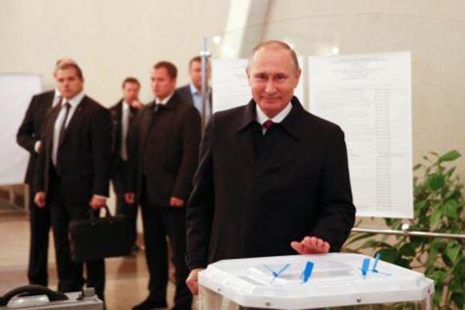

« Dans les démocraties libérales, tout est fake news » : entretien avec Alexandre Douguine
par Jeroen ZUALLAERT

« Vous prononcez le mot démocratie comme s’il était sacré. Vous trouvez certainement que les antidémocrates ne sont pas humains ! » Notre confrère de Knack s’est entretenu avec Alexandre Douguine, le prophète autoproclamé de Vladimir Poutine qui rêve d’un empire eurasien où il n’y a pas de place pour les journalistes.
Alexandre Douguine n’est pas l’idéologue maison de Vladimir Poutine. « Ou du moins pas littéralement », admet-il. « À l’heure actuelle, je n’occupe pas de position officielle au sein de l’appareil d’État. Je n’ai pas de ligne directe avec Poutine, je ne l’ai même jamais rencontré. Mais j’ai mes façons de communiquer. »
Pourtant, le terme « idéologue maison » n’est pas mal choisi, estime Douguine. « Si vous comparez mes théories et mes écrits à mon travail, vous pouvez uniquement en conclure que Poutine a suivi pratiquement toutes mes propositions politiques. Il a resserré les liens avec l’Iran et la Turquie et il a annexé la Crimée, ce que je lui recommande depuis des années. Il mise sur les normes et les valeurs traditionnelles. Il a fondé l’Union eurasienne, qui doit constituer la base d’un empire eurasien. Il y a dix ans, j’étais à Washington pour un débat, et on m’a introduit en ces termes : « Ne regardez pas la position de monsieur Douguine, regardez ses écrits et comparez-les aux actes de Poutine ». C’est tout à fait ça. »
En Russie, Douguine est surtout populaire dans les cercles militaires, où la lecture de sa Quatrième théorie politique est obligatoire pour les futurs officiers. Cette théorie succède à trois idéologies politiques – le libéralisme, le communisme et le fascisme – qui d’après lui ont perdu leur légitimité. La quatrième théorie politique doit combiner les éléments des trois théories précédentes, même si Douguine semble surtout détester la démocratie libérale. La quatrième théorie politique doit devenir l’idéologie dominante en Eurasie, une alliance géopolitique entre la Russie et l’Europe, qui, tout comme dans 1984 de George Orwell, doit endiguer ce qu’il appelle l’impérialisme américain.
Vous avez qualifié l’investiture de Trump de « l’une des meilleures journées de votre vie ». Êtes-vous toujours de cet avis ?
Alexandre Douguine : Je pouvais à peine en croire mes oreilles ! Pour moi, l’élection de Trump est la preuve que le peuple américain est toujours en vie. Je suis très heureux de l’avènement du trumpisme, même si aujourd’hui il est pris en otage par le Deep State (l’État dans l’État, NLDR). Aujourd’hui, Trump se trouve dans la camisole de force des globalistes américains, on dirait un personnage de Vol au-dessus d’un nid de coucou. Et pourtant, rien que son élection a été une gifle énorme pour l’interventionnisme américain. Grâce à lui, l’Amérique n’est plus le centre de la globalisation. Même s’il n’arrive qu’à implémenter un centième de ce qu’il a promis, ce serait un soutien incroyable pour le projet eurasien.
Assistons-nous à la fin du libéralisme ?
Ce n’est certainement pas encore la fin, mais les aspects négatifs du libéralisme se manifestent de plus en plus clairement. C’est une sorte de fascisme libéral qui considère tout le monde qui ne possède pas au moins un iPhone 6 comme moins humain. La modernité se voit elle-même comme un objectif final, alors que pour les traditionalistes c’est un choix. Heureusement, de plus en plus de personnes comprennent que le libéralisme est fondamentalement une erreur.
Quelle est pour vous l’erreur du libéralisme ?
Il a privé l’homme de toute forme d’identité collective. La religion, les valeurs traditionnelles, la hiérarchie, la conscience nationale : il faut s’en débarrasser. Tout devient optionnel : on peut choisir sa religion, sa nation, et aujourd’hui même son sexe.
Les transgenres sont tout de même une réalité…
Au contraire, c’est l’idéologie pure. L’homme invente ces concepts et la réalité s’y adapte. Les transgenres et l’homosexualité sont une idéologie politique, ils sont le dernier stade du libéralisme.
L’homosexualité a toujours existé, non ?
C’est de la propagande politique pure qui impose des normes de manière totalitaire à la société.
Dans une démocratie libérale, personne n’est contraint à être homosexuel, non ?
À partir du moment où on autorise quelque chose, la norme change. Au fond, les normes sont une sorte de schéma qu’il faut suivre, et si vous tolérez autre chose que la norme, vous en faites automatiquement une nouvelle norme. Si vous autorisez l’homosexualité, vous détruisez la société hétérosexuelle, parce que vous lui enlevez une forme d’identité collective. L’objectif ultime du libéralisme, c’est d’éliminer l’humanité : vous donnez le choix aux gens de poursuivre leur vie comme un cyborg, ou comme un animal.
Il n’y a tout de même personne qui propose ça sincèrement ?
Nous devons comprendre que le libéralisme est un produit de la modernité. Les concepts tels que le racisme, l’esclavage et le totalitarisme sont des concepts européens nés dans la modernité. Quand le libéralisme était encore contraire au fascisme et au communisme, on aurait dit un système antitotalitaire. Mais à présent qu’il n’y a plus de grands ennemis idéologiques, le libéralisme montre son vrai visage. Les idéologues tels que George Soros et Karl Popper divisent le monde en deux groupes : les sociétés ouvertes et fermées.
Tout comme les communistes divisaient le monde en capitalistes et prolétaires et les nazis faisaient la distinction entre les ariens et les non-ariens, ils divisent le monde en progressistes – les bons – et les conservateurs – les mauvais.
Cela ne rime à rien, non ? Dans une démocratie libérale, les conservateurs ont tout à fait le droit d’avoir des idées conservatrices.
Dans une démocratie libérale, seuls les conservateurs libéraux sont les bienvenus. Ceux qui ne le sont pas sont immédiatement marginalisés et criminalisés. Les gens comme moi, qui préconisent une démocratie non libérale, sont immédiatement traités de fascistes et de stalinistes. Nous sommes les nouveaux juifs et ouvriers du goulag. Votre société soi-disant ouverte n’accepte que les partisans de la société ouverte.
Mais les partis conservateurs sont tout de même autorisés dans les sociétés occidentales ?
Le débat est mené uniquement parmi les partisans du libéralisme. On peut être libéral de droite et libéral de gauche. On peut être libéral d’extrême droite ou libéral d’extrême gauche. Mais il est impossible d’être non libéral.
Considérez-vous le Front national comme un parti libéral ?
Le FN est un parti libéral d’extrême droite, car il est pour la république et la démocratie. Mais même lui est diabolisé et conspué parce qu’il n’est pas assez libéral.
N’est-il pas normal que les opposants politiques se critiquent entre eux ? Le FN peut tout de même simplement participer aux élections.
Mais ses adeptes sont diabolisés, ce sont des parias ! La même chose vaut pour les personnes qui soutiennent Trump. Si vous êtes dans un café à New York et vous dites que vous avez voté Trump, vous risquez de vous prendre une gifle.
Si vous êtes dans un café à Moscou et vous dites que vous détestez Poutine, vous risquez aussi de vous prendre une gifle.
Je ne suis pas d’accord avec cette analogie. En Russie, on peut parfaitement être anti-Poutine. Le seul moment où nous défendons Poutine, c’est quand nous sommes confrontés aux haïsseurs de l’extérieur. C’est une forme de solidarité russe collective.
Selon votre interprétation, l’Eurasie est-elle une démocratie ?
Vous prononcez le mot démocratie comme s’il était sacré. Vous trouvez certainement que les antidémocrates ne sont pas humains !
C’est une simple question. Votre interprétation de l’Eurasie est-elle démocratique ?
Ah, c’est quoi démocratique ? Disons-le ainsi : pour moi, l’Eurasie ne doit pas être non démocratique. Le taux démocratique de l’Eurasie dépend de ce que décide la société.
N’est-il pas logique qu’une telle décision découle d’un processus démocratique ?
Je trouve qu’une société doit pouvoir décider d’être régie par un monarque ou un dictateur. Le résultat d’une telle décision ne doit pas forcément être une démocratie. La seule véritable décision démocratique en Russie a été prise à l’époque du Zemski Sobor, l’assemblée russe qui a élu le premier tsar des Romanov au 17e siècle. Nous avons choisi un monarque, et nous en avons toujours été contents.
Que se passe-t-il si une société change d’avis ?
Tant qu’il n’y a pas de révolution, il y a un accord tacite qui légitime l’autorité du régime. Les libéraux veulent mettre fin à l’histoire et imposer leur idéologie à tout le monde alors que l’histoire politique est ouverte : la démocratie n’est pas une valeur universelle incontestable que le monde entier n’a qu’à accepter.
Ne trouvez-vous pas problématique que la Russie n’ait pas d’élections impartiales ?
Nos élections sont absolument impartiales, car chez nous elles ne servent pas à amener un nouveau régime au pouvoir. En tant que société, nous sommes plus ou moins contents de Poutine. Alors peu importe le pourcentage exact de gens qui votent pour lui.

Pourtant, vous êtes régulièrement critique vis-à-vis de Poutine ?
Je trouve qu’il ne fait pas ce qu’il a à faire, mais cela ne signifie pas que je ne trouve pas qu’il soit le seul leader légitime possible de la Russie. L’esprit russe fonctionne à plusieurs niveaux. Pour nous, la contradiction n’est pas inacceptable.
Quelle est votre principale critique envers Poutine ?
Je lui reproche d’avoir créé un système où il soit le seul individu capable de prendre une décision. En soi, c’est mieux que le chaos total, mais c’est instable. Poutine se comporte comme s’il était immortel. Malheureusement, il ne l’est pas.
Vous plaidez en faveur d’une dynastie Poutine.
C’est impossible, car pour cela il faut les institutions, et pour fonder ces institutions il faut formuler les principes de votre vision de la société. Il ne le fait pas. Le plus grand problème de Poutine, c’est qu’il n’a pas d’idéologie. C’est un leader génial qui a transformé un pays qui se désagrégeait en puissance souveraine. Aujourd’hui, chacun doit deviner ce qu’il signifie par « démocratie », « tradition », « religion » ou « modernisation ». Et celui qui devine mal, est puni. En 2014, j’ai été éjecté de l’université parce que j’ai critiqué sa politique étrangère. Mais je me suis résigné, je ne m’intéresse pas à ma carrière.
Êtes-vous content de la politique étrangère de Poutine ?
Je la trouve généralement équilibrée. Sa plus grande erreur c’est de ne pas avoir poursuivi la libération de l’Est de l’Ukraine. Il aurait pu pénétrer beaucoup plus loin en Ukraine. On savait à l’avance qu’il y aurait des sanctions économiques. Aujourd’hui, nous payons un prix lourd pour un produit relativement limité.
Voyez-vous un successeur possible ?
Dans le système de Poutine, il n’y a pas de place pour un successeur. Il craint de nommer un héritier qui soit aussi fort que lui, parce qu’il pourrait l’éclipser. Il était impossible de trouver un meilleur dirigeant que lui, mais nous en avons trouvé de pires. Entre 2008 et 2012, Dmitri Medvedev a pratiquement détruit le système, et il est toujours Premier ministre. C’est un danger que Poutine manipule : si vous ne me soutenez pas, je mets le monstre libéral sur le trône, et notre stratégie au Moyen-Orient tombe à l’eau. Rien n’a été réglé formellement. Le problème, c’est que Poutine parie sur deux systèmes : il est tant eurasianiste que libéral. Dans le paradigme économique, il trouve le libéralisme nettement plus important. Il devrait faire un testament où il explique son idée à son héritier.
Vous souhaitez que Poutine détermine à quel point la Russie peut être occidentale.
(hoche la tête) Il doit traduire son intuition individuelle en une doctrine destinée à sécuriser l’ordre futur. Il n’a tout simplement pas d’idéologie déclarée, et cela devient de plus en plus problématique. Chaque Russe sent que cette approche hyper individuelle de Poutine représente un risque énorme. La propagande à la télévision russe devient de plus en plus stupide. Les talk-shows politiques sur Pervyj Kanal (la principale chaîne publique, NLDR) sont carrément stupides. Les présentateurs sont une bande de libéraux qui se font passer pour des conservateurs par considérations financières. C’est une espèce de jeu : si Poutine change d’avis, il faut changer toute la machine de propagande. Là, ils invitent en permanence les mêmes idiots américains et ukrainiens pour faire passer l’Occident pour stupide. Ce n’est plus convaincant. Comprenez-moi bien : l’Occident est mauvais, mais nous devons au moins prendre la peine de l’étudier.
Ne craignez-vous pas que pour beaucoup de Russes les libertés occidentales paraissent attrayantes ?
Les Russes sont plus constants que vous ne le pensez. Dans les années nonante, les Russes ont été séduits par le libéralisme, mais ils ont rapidement senti la réalité amère. Nous ne devons pas craindre les Russes et leur présenter une caricature de la réalité à laquelle personne ne croit. C’est pourquoi je trouve la télévision russe actuelle aussi répugnante.
Cette critique vaut-elle également pour Russia Today et Sputnik ?
C’est tout à fait différent. RT et Sputnik font parfaitement leur travail. Ils promeuvent une alternative à l’agenda libéral globaliste. Ils élargissent l’opinion démocratique. Nous nous défendons uniquement contre l’élargissement agressif de la société moderne. L’Occident devrait accepter que la forme de société libérale soit optionnelle.
Ne trouvez-vous pas problématique que des médias comme Russia Today et Sputnik inventent tout le temps des événements ?
Les médias mentent en permanence. Tout est fake news. On ne peut approcher la réalité de manière neutre. L’esprit humain fonctionne toujours avec de l’information pro-cédée. Si vous cherchez la vérité, je vous conseille de devenir philosophe : vous aurez une vie intéressante. Celui qui travaille dans les médias est par définition un menteur.
De quelle façon est-ce que je mens, monsieur Douguine ?
Vous mentez parce que vous faites passer une réalité codée définie par la société, par les détenteurs de pouvoir qui contrôlent les médias. Antonio Gramsci dirait : vous mentez parce que vous avez conclu un pacte historique avec le capitalisme. Tout est idéologique, dit le marxisme, et l’idéologie est une fausse conscience : un mensonge pur.
Mais il y a les faits, tout de même ? Si demain Moscou lâche une bombe sur Bruxelles, et j’écris que Moscou a lâché une bombe sur Bruxelles, ce n’est pas un mensonge ?
(ricane) D’abord et avant tout, vous ne pourrez rien écrire si cela arrive. Vous serez mort.
Mettons que je survive.
Même alors, il vous faut recueillir des informations et vérifier les sources. Qui paiera votre billet pour accéder aux ruines ? Comment allez-vous prouver que Moscou est derrière les bombardements et non Oussama ben Laden ? Aujourd’hui, il n’est même pas clair qui étaient les auteurs du 11 Septembre ! D’abord, c’étaient les Saoudiens, mais à présent le président Trump a suggéré qu’il fallait une nouvelle enquête. Pourquoi est-ce nécessaire ? Parce que tout est fake news.
Vous êtes sérieux là ?
Dans notre société, on ne peut jamais être vraiment sûr que l’avion avec lequel Moscou a soi-disant lâché la bombe ait été détourné au dernier moment par des musulmans. Vous connaissez le film Conspiracy Theory ?
Non.
C’est un film extrêmement intéressant dont le personnage principal voit des complots partout, et qui est traité de fou. Mais finalement, il s’avère qu’il est le seul à avoir eu raison depuis le début.
Mais c’est de la fiction, non ?
Non, c’est le paradigme de la réalité. Nous vivons dans une réalité virtuelle du fake news. Le journalisme aussi est un produit typique de la modernité. La vérité est difficile à trouver, et pour la trouver nous devons éliminer le journalisme.
Vous voulez supprimer le journalisme ?
Il y a des sociétés sans journalisme qui ne sont pas pires que la société occidentale. En même temps je réalise que les mensonges peuvent être diffusés de millions de façons. Nous cherchons tout au plus la sécurité, la tolérance, le confort, et peut-être un peu de justice sociale. Le libéralisme ne s’occupe que d’efficacité et d’accélération, et plus de la recherche de la vérité.
L’autoritarisme s’intéresse encore beaucoup moins à la vérité.
Au contraire, dans l’autoritarisme il y a encore un choix. Le totalitarisme, la théocratie, la société de castes : dans les systèmes autoritaires, nous avons le choix entre plusieurs mensonges, ce qui est nettement plus agréable. En démocratie libérale, il n’y a qu’un mensonge à croire : l’assertion que la démocratie est la moins pire de toutes les formes de gouvernement. (réfléchit) Vous savez, le mal est surtout en nous. Nous mettons trop d’espoir et de confiance en la technologie épistémologique. Par exemple, je suis très préoccupé par la confiance aveugle des sociétés en les réseaux sociaux.
Vous aussi vous êtes un fervent utilisateur des réseaux sociaux.
J’essaie de transformer le poison en remède.
La Russie utilise les réseaux sociaux pour influencer les élections étrangères.
(ricane) Je crains que vous nous surestimiez. Oui, la Russie essaie de s’armer contre les attaques technologiques de l’Occident, mais nous n’y parvenons guère. Au fond, c’est une réaction à la guerre en réseau américaine des années nonante. Il vous faudra encore un peu de patience. Notre cyberprogramme n’en est qu’à ses balbutiements, et on nous accuse déjà d’avoir piraté les élections !
Partager cette page